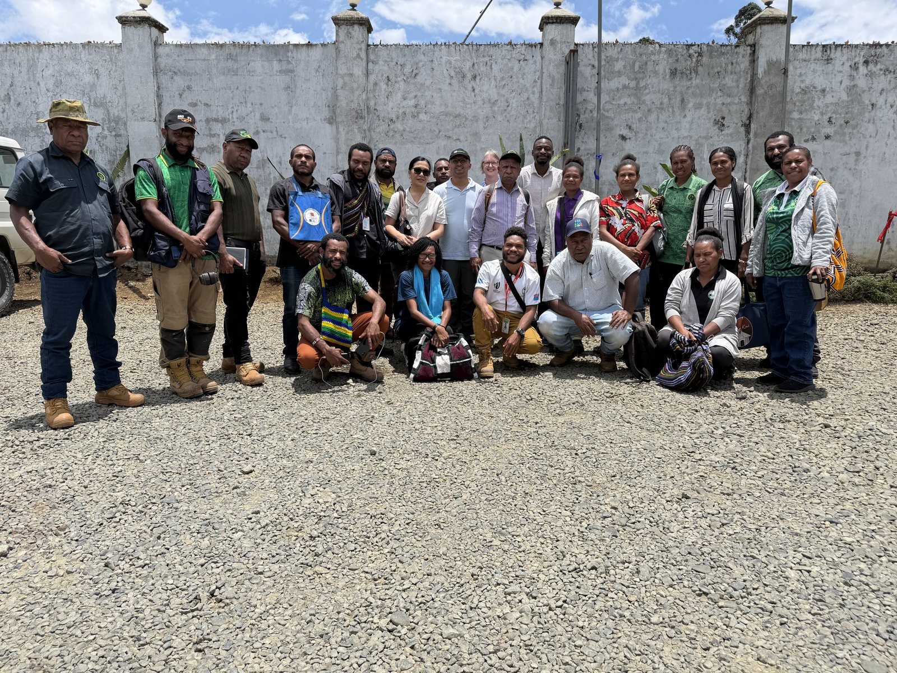
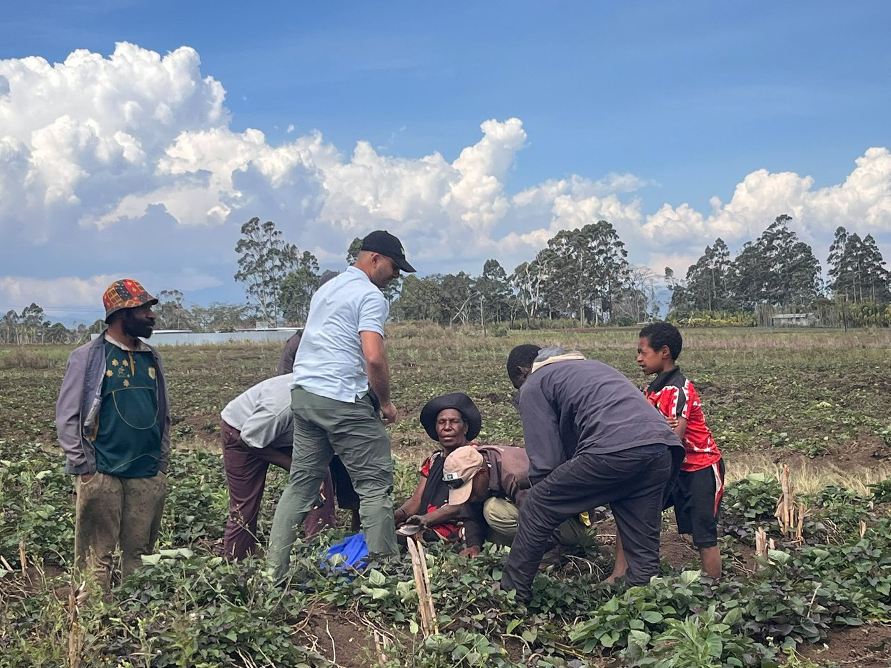
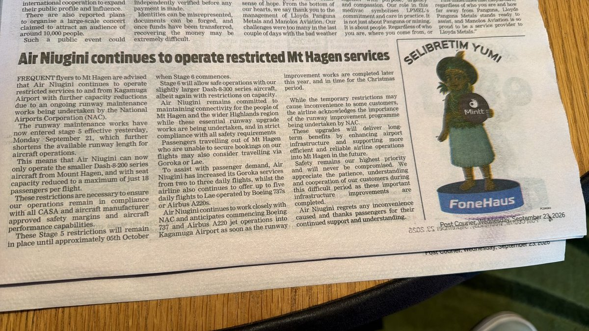
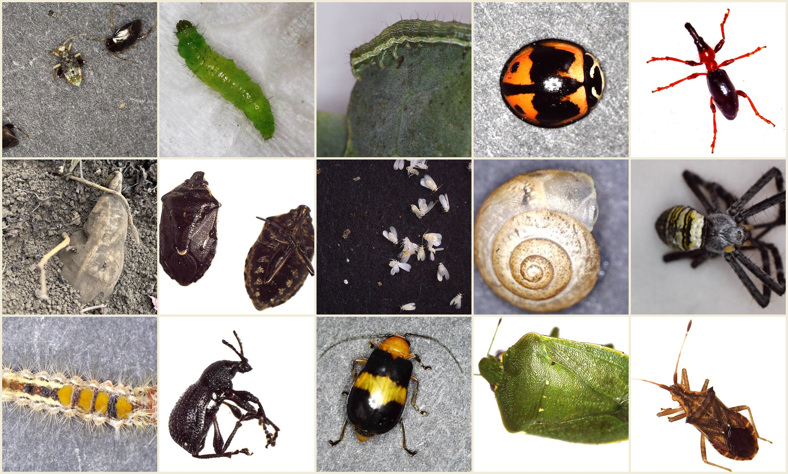

I have tried to get to Papua New Guinea twice before, and both times it fell through before I ever boarded a flight. So when I finally landed in the highlands this September, two weeks between Mount Hagen and the Eastern Highlands working alongside the Fresh Produce Development Agency, FPDA, it felt less like a routine field trip and more like something I had been trying to do for years. What I didn't expect was for it to feel like going backwards, in the best way.
Back to where I started
As I was visiting different sites in Eastern and Western highlands looking at the plant for any insect pests sign and symptoms, I realised I had done this exact thing before, a long time ago. My first job was as an agriculture officer in Nepal, working almost entirely on vegetable insect pests and training farmers how to tell one bug from another. I hadn't expected a highlands cabbage plot on the other side of the world to pull that version of myself back so clearly, but it did, right down to the posture of listening for what a farmer already half-knows before answering.

Part of the team gathered before a day of farm visits and training across the highlands communities.
Photo: Sulav Paudel
Working with what they already have
The longer I spent in the strawberry, cabbage and bulb onion plots around Mount Hagen and the Eastern Highlands, the clearer it became that any training only works if it starts from what farmers are already doing, not from a blank slate. Most pest management here is informal: a narrow set of commercial sprays, applied on a routine rather than against a confirmed pest, with little scouting or rotation between chemical groups. In a couple of onion-growing communities, lambda-cyhalothrin, sold locally as Karate, is reportedly starting to fail against the very pests it used to control, which is exactly what you would expect after years of leaning on one product. None of that is a knock on the farmers. It is a sign of where training needs to go next, and it only becomes obvious once you have sat with people and understood their context rather than arrived with a pre-built curriculum.
And alongside that, there is real ingenuity to work with. The mosquito-net nursery covers in the photo above were a farmer's own idea, not something we introduced, a simple, in-context fix for insect pressure on seedlings using whatever was on hand. That is the kind of starting point I think makes technology transfer actually land: small, affordable adaptations that already make sense within a farmer's own constraints, rather than something imported wholesale.

A field visit to a sweet potato plot, the kind of unhurried, side-by-side conversation that tells you more than any survey.
Photo: Sulav Paudel
Travel is hard, the opportunity isn't
None of this was simple logistically. Runway works meant repeatedly reduced capacity on flights into Mount Hagen, security escorts were needed to move around safely, and more than one leg of the trip changed at short notice. Partway through, a local paper ran a notice confirming what we were already feeling in person, that Air Niugini's Mount Hagen services would stay capacity-restricted for weeks yet.

The local paper, mid-trip, on the runway restrictions that were already reshaping our own travel plans.
Photo: Sulav Paudel
It is also a genuinely difficult year to be a vegetable farmer here. The highlands are deep into an El Niño-driven dry spell, severe enough that one local paper carried a story about women on Duke of York Island being asked to bring their own water with them to the health clinic for antenatal visits. I kept coming back to that detail, small on the page, enormous in what it says about how far a drought can reach into daily life.
But none of the friction took away from the opportunity. What struck me most was how motivated and genuinely enthusiastic the FPDA team was, people clearly hungry for new tools rather than being handed one more outside program. A quick demonstration of phone-based pest identification, pointing a camera at a leaf and getting a plausible match, drew the kind of excitement that tells you exactly where the next useful, low-cost intervention sits. Simple things: an identification app, a basic scouting routine, a shared reference sheet for the half-dozen pests doing most of the damage. None of it needs to be complicated to be useful.
It wasn't nostalgia so much as recognition, the same questions, the same patience required, the same quiet satisfaction when a farmer finally places why a leaf is curling. I didn't expect a two-week highlands trip to feel like a homecoming.
A quick census of highlands pests
Even with limited time in the field, a handful of vegetable plots turned up a striking range of insect life, aphids and their mummified remains, diamondback moth larvae, a leaf-footed bug keeping company with stink bugs, orb-weavers patrolling for anything smaller than themselves, a weevil that had clearly been having a bad day. It is a small, unscientific snapshot, but it says something about how much pressure these crops are under from every direction at once, and how much ground-level identification work is still needed.

A small sample of what two weeks in highlands vegetable plots turns up: aphids to orb-weavers, lady beetles to leaf-footed bugs.
Photo: Sulav Paudel
I did not get much chance to see beyond the project sites this time, and that is fine. This trip was never meant to cover the whole country, and honestly, after two failed attempts to get here at all, just arriving felt like enough of a win. What I am left with is a short list of simple, doable things, and a team on the ground who already want to do them. That is a good place to end a first trip, and a good reason to be back for a second.